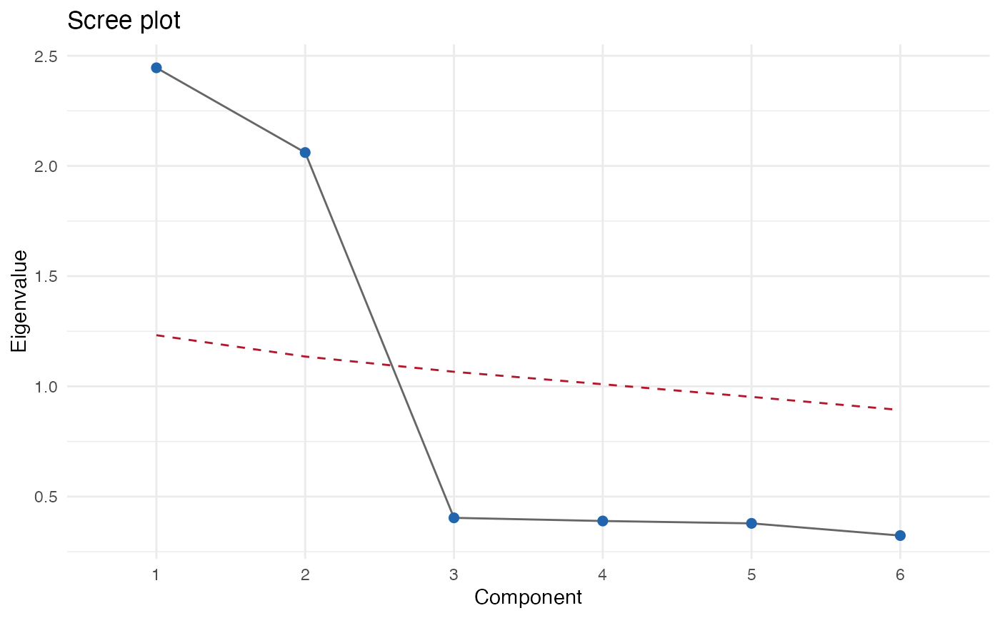

Compares the eigenvalues of the residual trait correlation matrix with those
of data that has no correlation at all, and returns how many components stand
above that reference. It is the rule of thumb for setting n_factors
when you intend to interpret the factors.
Arguments
- Y
Numeric matrix of traits, individuals in rows.
- X
Optional finite numeric fixed-effects matrix with the same rows as
Y, as inlmm_animal. The defaultNULLuses an intercept only, which is the same as centering the traits.- nsim
Number of simulated data sets, a whole number. More is slower and steadier; the default is enough to place the 95% point.
- level
Quantile of the simulated eigenvalues to compare against, one number between 0 and 1. The default 0.95 keeps a component only when it clears 95% of what uncorrelated data of the same size produces.
- max_factors
Largest number to report, a whole number. It is capped at the number of traits minus one, because the factor models need at least one residual degree of freedom per trait.
Value
A whole number between 1 and ncol(Y) - 1. The raw count is in
attr(x, "retained"), which is 0 when nothing stands above the noise,
the eigenvalue cutoffs are in attr(x, "reference") for
plot.scree, and attr(x, "share") is the fraction of
the variance taken by the retained components.
Details
Parallel analysis (Horn 1965) asks what the eigenvalues would look
like with no shared structure: it simulates independent normal traits with
the same number of individuals, removes the same fixed effects, and records
the level quantile of each eigenvalue. A component is retained when
its observed eigenvalue is larger. Unlike "keep the eigenvalues above one"
or eyeballing the elbow, the cutoff then accounts for the sample size, the
number of traits and the fixed effects.
The result is an upper bound, not a recommendation to use that many
factors. With a few hundred individuals and dozens of traits the noise floor
is high enough that weak components clear it: on the mouse morphometric data
it keeps seven dimensions, of which the first two take 28% and 11% of the
variance while the seventh clears its cutoff by 0.003. Factors you intend to
interpret are usually fewer: look at scree_eigenvalues and stop
where the eigenvalues flatten out. The count also cannot tell a single strong
direction split across two columns from two directions, which is what
column_decay is for.
The result is at least 1 because the factor models need at least one factor;
when nothing clears the reference, that is a sign that a factor model is
fitting noise rather than structure, and attr(x, "retained") says so.
Fix the seed before calling when the answer has to be reproducible.
Examples
set.seed(1)
# two modules of three traits each
loadings <- matrix(0, 6, 2)
loadings[1:3, 1] <- 0.8
loadings[4:6, 2] <- 0.8
P <- loadings %*% t(loadings) + diag(6) * 0.36
Y <- matrix(stats::rnorm(400 * 6), 400) %*% chol(P)
colnames(Y) <- paste0("t", 1:6)
suggest_n_factors(Y) # 2
#> [1] 2
#> attr(,"retained")
#> [1] 2
#> attr(,"eigenvalues")
#> [1] 2.4452694 2.0608424 0.4034226 0.3891087 0.3783506 0.3230063
#> attr(,"reference")
#> [1] 1.2219686 1.1276298 1.0668124 1.0060175 0.9525715 0.8951196
#> attr(,"level")
#> [1] 0.95
#> attr(,"share")
#> [1] 0.7510186
scree <- scree_eigenvalues(Y)
plot(scree, reference = suggest_n_factors(Y))
